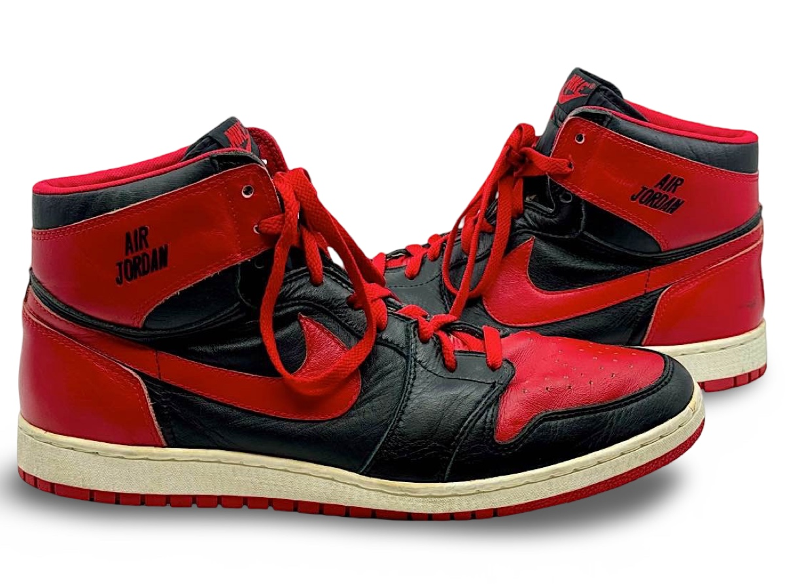
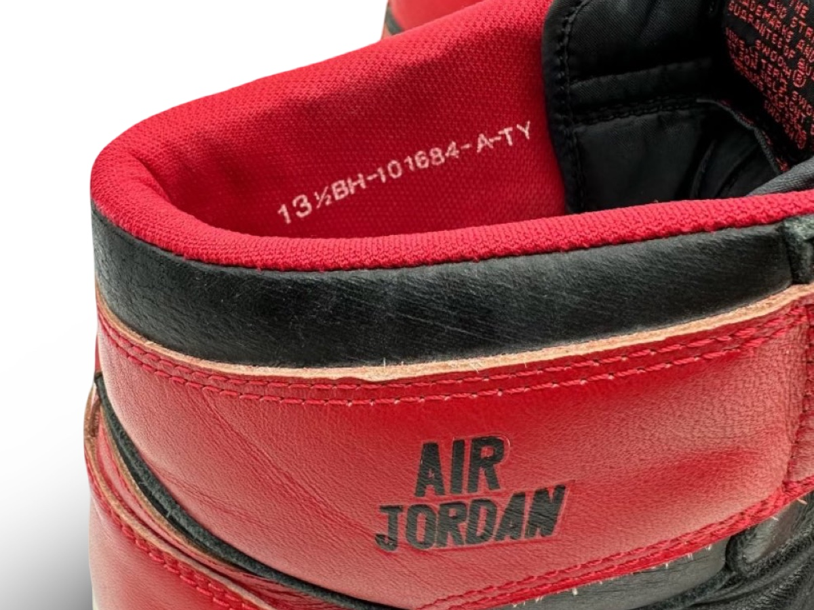

The first known Air Jordan prototype, photo-matched to multiple early promotional campaigns.
The first documented Nike Air Jordan used on multiple Nike
promotional images in October 1984.
Public Sale
- Auction House: Grey Flannel Auctions
- Sale Date: June 10, 2024
- Lot #: 2
- Sale Price: $325,000
Owner
- Instagram: collector10012
Photo Match Details
- Photo-Matched: Yes
- Games Photo-Matched: 1
- Photo-Matched By: SIA & MJA
Research & Provenance
- First known pair ever produced as a prototype for testing and visual development.
- A sample version featuring “Air Jordan” text branding prior to the official Wings logo and retail launch.
- Internally photo-matched within the archive to multiple promotional photographs.